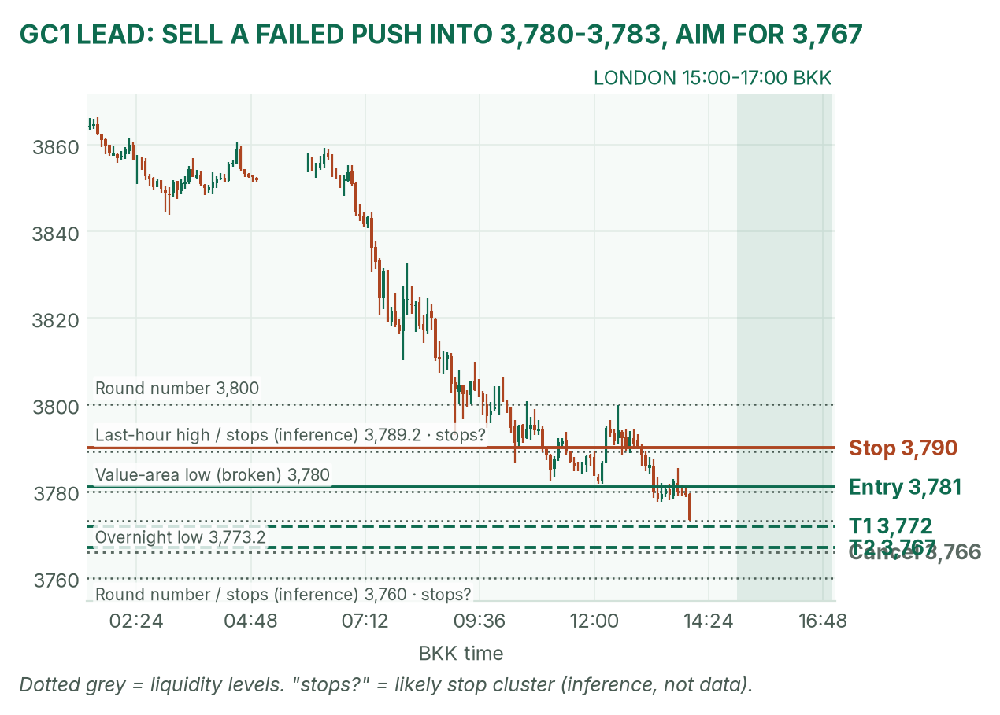
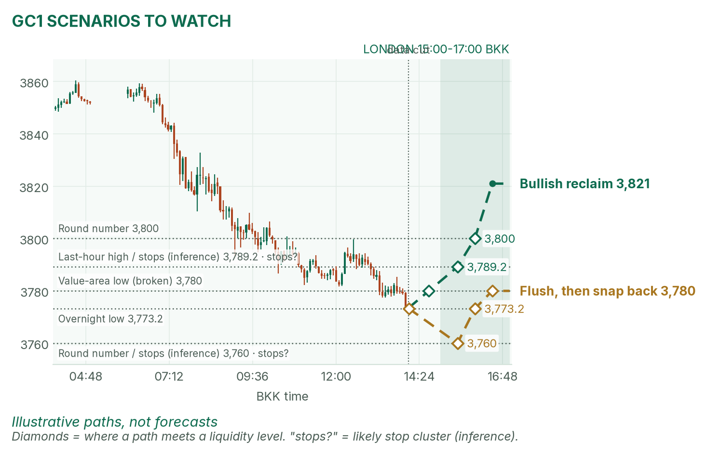
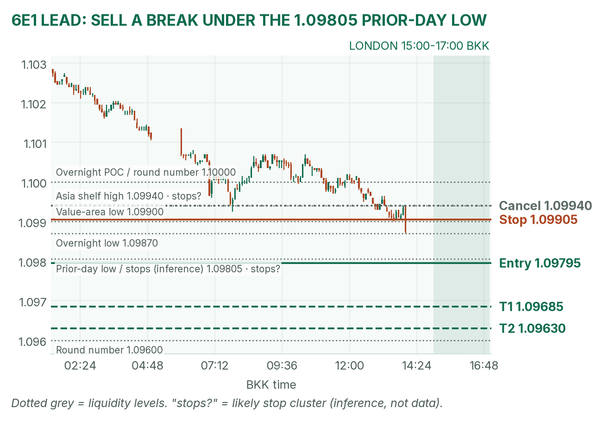
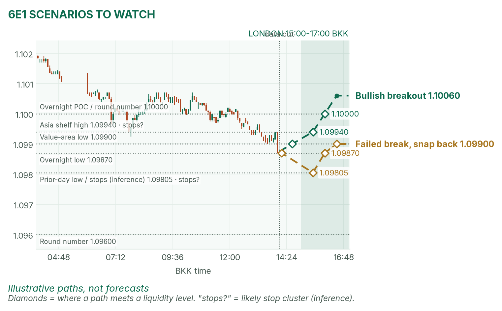

Gold lost $80 overnight and the euro is at its lows. London opens into a trend, so I only sell bounces and breaks.
Window 15:00–17:00 BKK (UK on GMT). Data cut 14:05 BKK: GC 3,773.4, 6E 1.09875 (Dec contracts, TopstepX, last completed 5-minute bar). Levels only, flat by 17:00. Ideas, not advice. April's pre-London brief (~13:00 BKK) was read.
Summary
GC: sell only a failed bounce into 3,780–3,783, stop 3,790, targets 3,772 and 3,767. About 36%. It sides with the hawkish Fed.
6E: sell a break under the 1.09805 prior-day low, stop 1.09905, targets 1.09685 and 1.0963. About 33%.
UK inflation is already out (14:00). No scheduled release inside the window; the Fed minutes land at 02:00 Thursday.
The market story
The Fed is still the big weight. St. Louis Fed president Musalem said the economy likely needs "several interest-rate increases" (April's brief, via Bloomberg). Higher rates mean cash and bonds pay more, so holding gold, which pays nothing, costs more. That is the rates lesson in action. The dollar index is firm at 103.669 (CNBC via April).
Gold opened at 3,855.2 and slid all night to 3,773.2 at 14:00, below Tuesday's 3,839.2 low. That is a trend day so far, not a range. The euro slipped from 1.10135 to 1.0987, just above Tuesday's 1.09805 low. My read: both are trending down; I sell strength, I don't buy weakness.
News (BKK)
Time
Event
Forecast
Prior
Read
14:00
UK October CPI (y/y)
3.7%
3.5%
Actual 3.6% (ONS): a touch cool versus forecast, still up from September. Gold and the euro fell anyway. Out before the window.
Thu 00:15
Fed's Daly
–
–
After the window.
Thu 02:00
FOMC minutes
–
–
The US decider, long after the window.
No-trade zone (5 minutes before to 2 after a release): none falls inside 15:00–17:00. Source: April's calendar (press previews), ONS.
Levels to watch
Level
GC
6E
Tuesday high / low
3,894.0 / 3,839.2
1.1036 / 1.09805
Overnight high (since 06:00)
3,859.3
1.10135
Overnight POC (busiest price)
3,821
1.1000
Overnight value area
3,780–3,853
1.0990–1.1006
Last-hour high / low
3,789.2 / 3,773.2
1.09965 / 1.0987
Typical London range (last 4, median)
about 14.5 points
about 16 pips
Gold (GC1)
Bias: down on macro and on the chart. The London gold rule is to mark the 15:00–15:30 range and fade its edges. The overnight POC at 3,821 is far too far away today, so the fade aims at the lows instead. My volatility model expects roughly 3,766 to 3,781.
The trade: sell a failed bounce
Entry
3,780–3,783 (plan 3,781), after 15:30, only if a push into the broken 3,780 value-area low stalls and a 5-minute bar closes back below 3,780
Stop
3,790, above the 3,789.2 last-hour high, where buy stops likely cluster (my inference: a stop cluster is a pile of resting stop orders at an obvious level)
Targets
1R partial 3,772 · full target 3,767 (1.56R)
Cancel
Gold trades at 3,766 before the bounce, a 15-minute close above 3,790, or no fill by 16:30
Probability
~36% for the full target, an estimate. Basis: GC London range fades did best in our 42-session study (not statistically significant); the 14-point aim is about one median London range.
Why: old support often turns into resistance after a break. No stall at 3,780, no trade. April agrees: she flags gold near its low with Fed hike talk in charge.

GC 5-minute bars to the 14:05 cut. The sell sits at the broken value-area low, under the last-hour high.

Illustrative paths, not forecasts.
Scenarios to watch
Bullish reclaim: a 15-minute close above 3,789.2 that holds. Aims for 3,800, then the 3,821 POC.
Flush, then snap back: a drop through 3,766 toward 3,760 that reverses back above 3,773. Aims for 3,780.
Euro (6E1)
Bias: down, with the dollar. The 6E London rule is to trade breakouts of the 15:00–15:30 range. Tuesday's low at 1.09805 is the obvious line, and sell stops likely sit just under it (my inference). A pip is 0.0001.
The trade: bearish breakdown
Entry
Sell stop 1.09795 after 15:30, one tick under Tuesday's low; skip if the 30-minute range low is already below 1.0980
Stop
1.09905, above the 1.0990 value-area low
Targets
1R partial 1.09685 · full target 1.0963 (1.5R), above the 1.0960 round number
Cancel
A trade above 1.0994 before the fill, or no break by 16:30
Probability
~33%, an estimate. Basis: 6E London range breakouts averaged +0.31R over 26 sessions (not significant); 16.5 pips is about one median London range.
Why: a break of a clear prior-day low tends to run as stops trigger. April partly agrees: her hawkish case watches the euro's lows, but the cool UK print makes "hot data" less likely today.

6E 5-minute bars to the 14:05 cut. The entry sits one tick under Tuesday's low.

Illustrative paths, not forecasts.
Scenarios to watch
Bullish breakout: a 5-minute close above 1.0994. Aims for the 1.1000 POC, then 1.1006.
Failed break, snap back: a dip under 1.09805 that closes back above it. Aims for 1.0987, then 1.0990.
NQ (not traded): 27,243.25 at the cut, at its 27,230 POC, mid-range between 27,093 and 27,609.75.
Before you click
ORB bases. GC London: 15:00–15:30 range, fade to POC. GC NY: 20:20 COMEX open until a 2-minute candle's volume drops below half the first two's average, fade to POC. 6E London: 15:00–15:30 range, trade breakouts. NQ NY: 21:30–21:35 range, trade breakouts.
Checklist. Room to max loss? Daily rules OK? No release within 30 minutes? With the bias? At a marked level? Setup tagged? Entry, stop, 1R partial, target set? Calm, not chasing?
Reset (60 seconds). Hands off the mouse. Breathe in 4, hold 4, out 6, five times. Name the feeling in one word. Say the plan aloud. "Eager" or "frustrated"? Wait 5 minutes.